Live audio rooms
Join a live discussion, listen to the host, raise a hand and speak when invited.
Product design · B2B audio SaaS
Space is a B2B platform that lets companies embed Clubhouse-style audio on their own website, for sales conversations, e-commerce and fireside chats. We designed the widget visitors use to join a live room, talk, react and buy, without leaving the page.
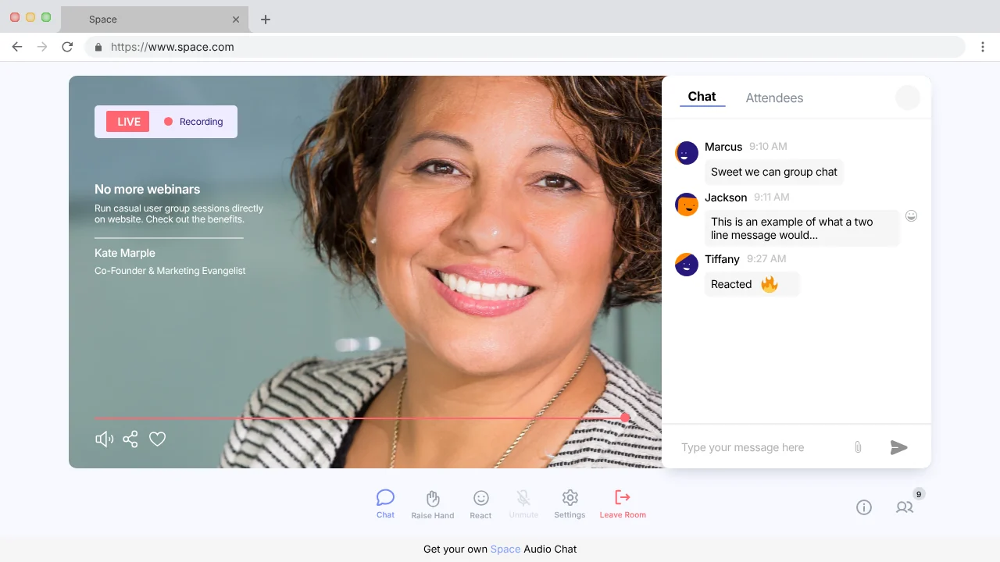
The brief
Live audio builds trust fast, but sending website visitors off to another app to listen breaks the moment. Space puts the room right on the company’s own site, where the customer already is.
The widget had to work for someone who has never used it: join in a click, understand who’s speaking, take part when they want to, and never lose the page they came to see.
We designed four features into one widget:
Join a live discussion, listen to the host, raise a hand and speak when invited.
Start a private audio and text chat with the team, with an offline state when no one’s around.
See upcoming audio events and RSVP straight from the widget.
Listen back to recorded sessions, or have the recording sent by email.
Joining a live audio room
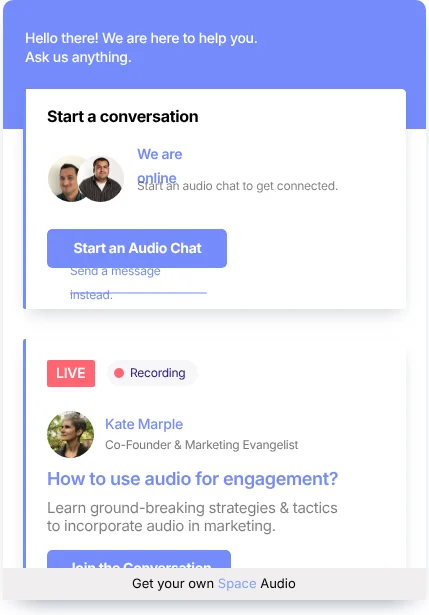
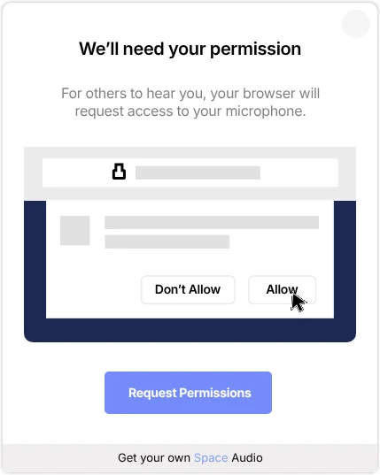
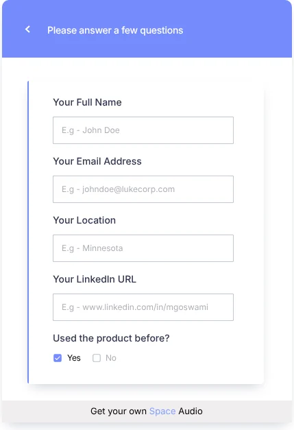
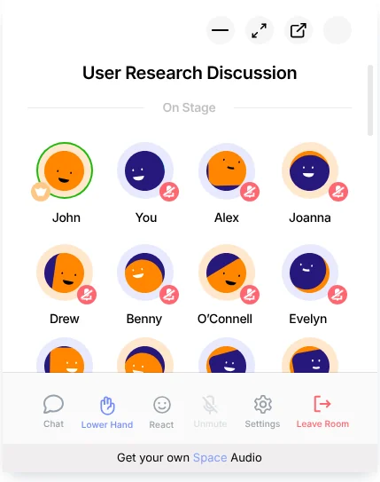
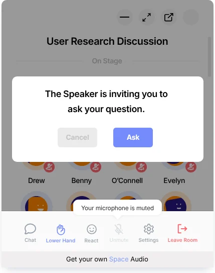
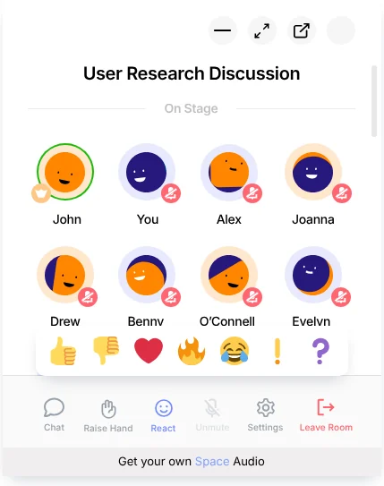
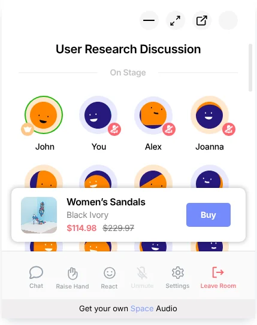
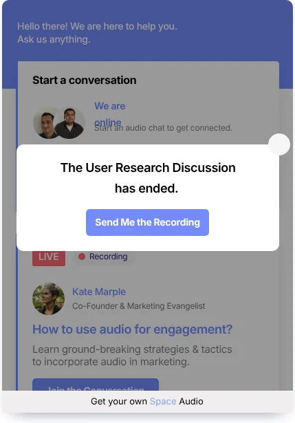
Three ways to listen
Every screen was designed in three sizes, so visitors can keep browsing while they listen, or give the room their full attention.
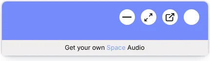
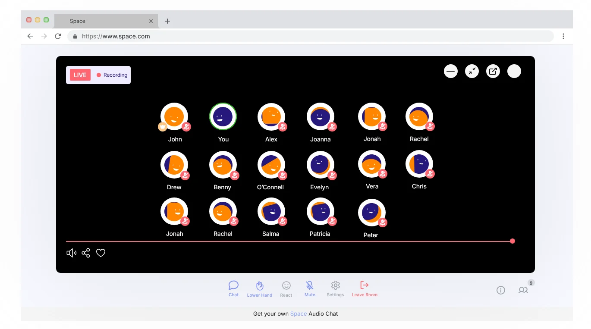
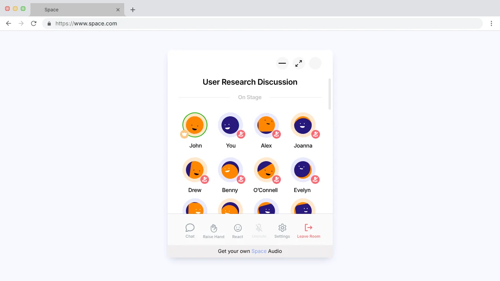
The expanded experience
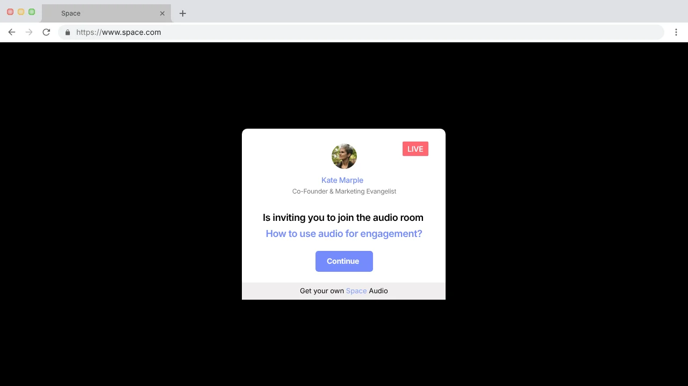
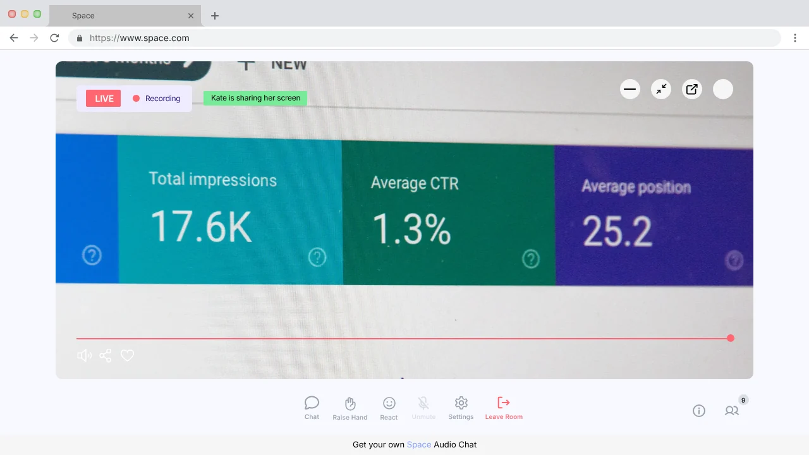
Beyond live rooms
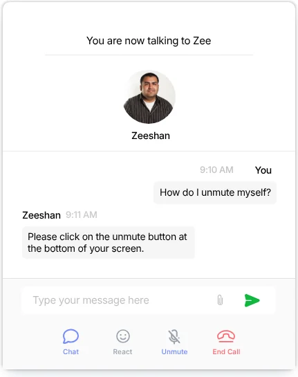
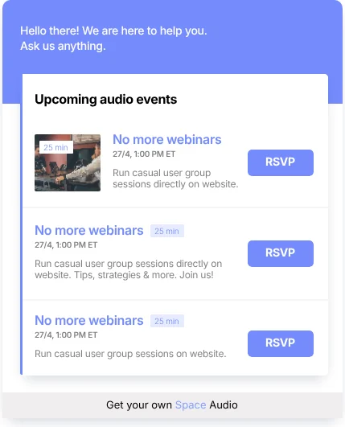
Design decisions
Visitors join from the page they’re on. The only setup is a microphone permission, explained before the browser asks.
Everyone joins as a listener. Raising a hand, reacting and chatting let people take part at the level they’re comfortable with.
The product ribbon puts a Buy button where the recommendation happens, instead of sending shoppers to search for it.
Re-joining, being muted by the speaker, a discussion ending, recording sent and errors all have their own clear screen.
Building a product people talk about?